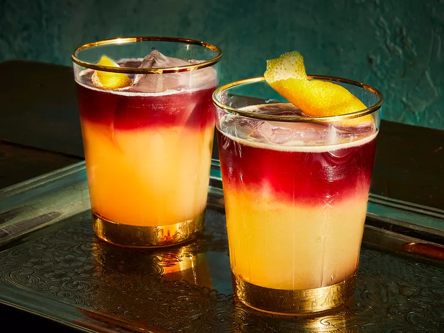

2. New York Sour
The New York Sour is a classic and elegant cocktail that consists of a variation of the Whiskey Sour.

Carefully pour fruity red wine over the back of a spoon into a mix of shaken chilled bourbon, lemon juice,
and simple syrup to make a classic New York Sour.
Ingredients
2 ounces rye whiskey or bourbon
1 ounce lemon juice, freshly squeezed
3/4 ounce simple syrup
1 egg white (optional)
1/2 ounce red wine
How to prepare
Add the whiskey, lemon juice, simple syrup and egg white (optional)
- That all in a shaker with ice and shake hard until well-chilled.
Strain into a rocks glass over fresh ice.
Adding the red wine.
- Slowly pour the red wine over the back of a bar spoon so that the wine floats on top of the drink.
Helpful Tips
- The egg white gives it a velvety texture and a nice layer of foam, which helps keep the red wine on top.
- Use a dry red wine (like a Claret), as sweeter or softer wines may sink in the glass.
- The layer of wine must be done carefully so that it does not mix with the liquid below, but rather floats.
Enjoy your New York Sour!